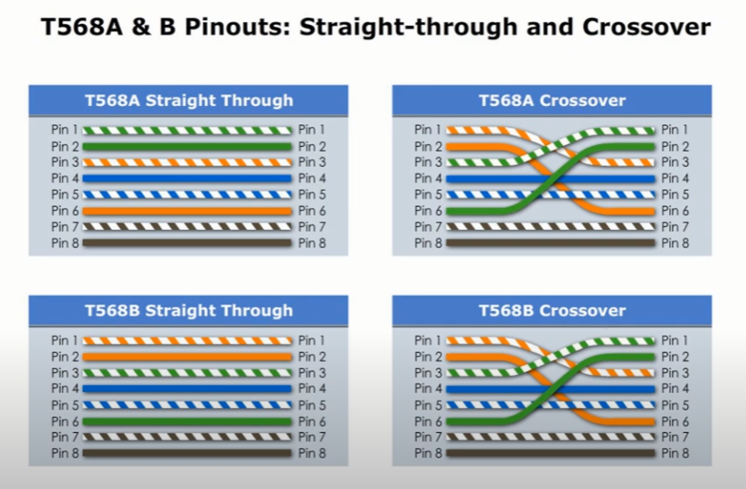
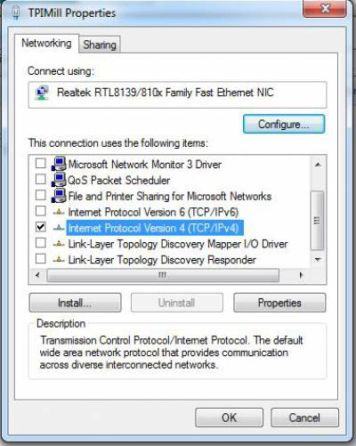
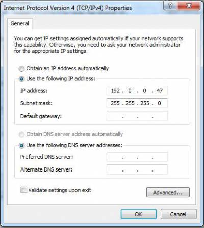

SPUD Network Troubleshooting (PC-Mill)
SPUD / PC-Mill Diagnostics
SPUD REQUIRES A CROSSOVER CABLE.
Standard off-the-shelf patch cables will not work. A crossover cable has Green and Orange pairs swapped (Pins 1 & 2 swapped with 3 & 6).

Power Down and Reseat Physical Connections
Assign IP Settings in Control Panel
Power Up and Ping Test
ping 192.0.0.47. If successful, communication is restored. If it fails, proceed.Verify Windows HOSTS File (Admin)
C:\Windows\System32\drivers\etc. Open Notepad as Admin, then open `hosts`. Verify the exact line: 192.0.0.46 PC MILL. Correct if missing.
5
CPU Board Environmental & Hardware Check

Aldebaran Architecture: User vs. Mill Computers
Understanding the dual-PC architecture is critical before troubleshooting.
User Computer (Windows PC)
This is a Windows-based PC that runs the Aldebaran UI. Dual NICs are strictly required (1 integrated into mother board & 1 external network card). One communicates with the facility network, the other exclusively to the Mill.
⚠️ Since this PC is used strictly for the machine control interface, Tarus does not recommend ANY other external software applications be used on it.
Mill Computer (Embedded)
This is an embedded computer running a Real Time Operating System (RTOS) that provides low-level, fast control of machine movements and I/O functions. Constant interaction between the Mill computer and the User computer is maintained via a Proxy service appearing in the Windows System Tray.
Aldebaran / Mill-Proxy Protocol (RMX)
Utilizes standard straight-through Ethernet cables for RMX systems.
Power Cycle, Reseat Cable, & Reseat Mill PC Flash Card
Assign IP Settings in Control Panel
Check Proxy Tray Icon & Services
services.msc and verify Mill-Proxy is Running. Restart if hung.Verify HOSTS File (Administrator Required)
C:\Windows\System32\drivers\etc and open the `hosts` file. Ensure the following exact line exists: 192.0.0.46 tpimill. Save and exit.


Protocol 2: Windows Power & Adapter Optimization
Windows energy-saving features can inadvertently interrupt the continuous network "heartbeat" required by Mill-Proxy. These settings must be disabled to ensure stability.
- Set Power Plan to High Performance: Navigate to Control Panel > Power Options. Select High Performance.
- Disable Sleep and Display Shutoff: Click Change plan settings. Set Turn off the display to Never and Put the computer to sleep to Never.
- Advanced Power Settings: Hard Disk: Click Change advanced power settings. Expand Hard disk > Turn off hard disk after. Change Setting (Minutes) to 0 (Never).
- Disable Network Adapter Power Management: Open Network Connections. Right-click the Machine Control adapter > Properties > Configure > Power Management tab. UNCHECK "Allow the computer to turn off this device" and "Only allow a magic packet to wake".
- Disable Energy Efficient Ethernet (EEE): In the same adapter window, go to the Advanced tab. Find Energy Efficient Ethernet. Change Value to Off. Click OK.
Aldebaran / Q-Proxy Protocol (QNX)
Utilizes standard straight-through Ethernet cables for digital QNX systems.
Power Cycle, Reseat Cable, & Reseat Mill PC Flash Card
Assign IP Settings in Control Panel
Check Proxy Tray Icon & Services
services.msc and verify Q-Proxy is Running. Restart if hung.Verify HOSTS File (Administrator Required)
C:\Windows\System32\drivers\etc and open the `hosts` file. Ensure the following exact line exists: 192.0.55.46 qnxmill. Save and exit.


Protocol 2: Windows Power & Adapter Optimization
Windows energy-saving features can inadvertently interrupt the continuous network "heartbeat" required by Q-Proxy. These settings must be disabled to ensure stability.
- Set Power Plan to High Performance: Navigate to Control Panel > Power Options. Select High Performance.
- Disable Sleep and Display Shutoff: Click Change plan settings. Set Turn off the display to Never and Put the computer to sleep to Never.
- Advanced Power Settings: Hard Disk: Click Change advanced power settings. Expand Hard disk > Turn off hard disk after. Change Setting (Minutes) to 0 (Never).
- Disable Network Adapter Power Management: Open Network Connections. Right-click the Machine Control adapter > Properties > Configure > Power Management tab. UNCHECK "Allow the computer to turn off this device" and "Only allow a magic packet to wake".
- Disable Energy Efficient Ethernet (EEE): In the same adapter window, go to the Advanced tab. Find Energy Efficient Ethernet. Change Value to Off. Click OK.
TarusNC / S-Proxy Protocol
Proprietary overlay communicating directly with Siemens Sinumerik 1 architecture.
1 Verify Physical Port Initialization
Next, open
Control Panel\Network and Internet\Network Connections. Unplug the network cable from the PC and plug it back in. Watch the screen to make sure the specific network adapter named Machine Control initializes. Because these PCs have multiple network ports, this ensures you are plugged into the correctly configured port.

2 Verify Machine Control IP Address
Verify the IP address is configured exactly as 192.168.214.55 with a subnet mask of 255.255.255.0. If this does not currently match, this is a major problem and must be corrected to establish communication.

3 Siemens Communication Settings
SINUMERIK_OPERATE_pc.exe as Administrator (Select Standard ONE NCU and Complete setup).Open the Windows Control Panel (set View by to Small icons). Launch Communication Settings. Once open, select Access points on the left. Expand S7ONLINE and verify it is assigned to the Machine Control adapter (e.g.,
Intel(R) Ethernet Controller I226-V. TCPIP.AUTO. 1).

Protocol 2: Windows Power & Adapter Optimization
Windows energy-saving features can inadvertently interrupt the continuous network "heartbeat" required by TarusNC. These settings must be disabled to ensure S-Proxy stability.
- Set Power Plan to High Performance: Navigate to Control Panel > Power Options. Select High Performance.
- Disable Sleep and Display Shutoff: Click Change plan settings. Set Turn off the display to Never and Put the computer to sleep to Never.
- Advanced Power Settings: Hard Disk: Click Change advanced power settings. Expand Hard disk > Turn off hard disk after. Change Setting (Minutes) to 0 (Never).
- Disable Network Adapter Power Management: Open Network Connections. Right-click the Machine Control adapter > Properties > Configure > Power Management tab. UNCHECK "Allow the computer to turn off this device" and "Only allow a magic packet to wake".
- Disable Energy Efficient Ethernet (EEE): In the same adapter window, go to the Advanced tab. Find Energy Efficient Ethernet. Change Value to Off. Click OK.
Protocol 3: RF Interference (Ekahau Diagnostics)
If the physical cables, IPs, and Power Settings are correct, dropped communications may be caused by EMI noise (power cables routed with network lines) or heavy Wi-Fi traffic. If using wireless Hirschmann APs, map the network to eliminate interference.
- Connect & Launch: Power on Ekahau Sidekick 2. Connect via USB-C to diagnostic iPad/Laptop. Launch Ekahau Analyzer app and sign in with Tarus credentials.
- Read the Spectrum: Navigate to Spectrum Analysis/Waterfall view. Filter to 5GHz band. Red/Orange = heavy utilization. Deep Blue/Black = empty and available.
- Walk the Machine Footprint: Physically walk the perimeter of the TARUS machine installation. Watch for a channel (e.g. 149 or 153) that remains "quiet" (Blue/Black).
- Select & Document: Identify the cleanest 20MHz wide channel. Program this channel number into the Hirschmann LanConfig software.
WARNING: SAFETY INFORMATION
- Ensure the machine is in a safe condition before beginning.
- After any reset or firmware installation, verify axis limits, reference positions, and machine safety functions before returning the machine to production.
Procedure 1 – NC & PLC Reset
Verify Startup
Set Initial Dial Positions
| Device | Position |
|---|---|
| NC Dial | 1 |
| PLC Dial | 3 |
Switch NC to Normal Mode
| Indicator | Status |
|---|---|
| READY | Flashing Green |
| STOP | Flashing Orange |
| SF | Solid Red |
Clear the PLC
3 → 2 → 3 → 2
Leave the selector in Position 2.
Verify PLC Reset
| Indicator | Status |
|---|---|
| READY | Flashing Green |
| STOP | Solid Orange |
| SF | OFF |
| 7-Segment Display | 6 |
Complete the Reset
| Indicator | Status |
|---|---|
| READY | Solid Green |
| RUN | Solid Green |
Purpose
Required Equipment
- Personal USB flash drive
Procedure
1 Open the Main Menu

2 Access the Setup Menu
3 Navigate to Page 2

4 Open the Archive Utility
5 Configure the Archive
• Verify and make sure that you click the option to Generate Archive and All Data of This Machine.
• Verify that all available component checkboxes (NCK, PLC, Drives, etc.) are selected. Selecting all options ensures the archive contains the complete machine configuration, making future comparisons and restorations possible.


6 Name the Archive
Customer_Machine_Before_Date
Example: Ford_2021_Before_7-14-26
Customer_Machine_After_Date
Example: Ford_2021_After_7-14-26
7 Select the Save Location
8 Start the Archive

Archive Process Rules
- Progress bars will begin filling until they reach 100%.
- Do not power off the machine.
- Do not remove the USB drive.
- Do not press Cancel.
- Interrupting the archive process may result in an incomplete or unusable archive.
Expected: PLC Sign of Life Errors
This behavior is expected. These messages occur because the system performs a PO Reset during the archive process and do not indicate a machine fault. Do not be alarmed.
IMPORTANT SAFETY NOTES
- Follow all site safety procedures before jogging any axis.
- Use the correct variable address for the customer application before changing feedback mode.
- When changing Y-axis encoder topology, expect the system to perform a soft reset or NCK/PO reset. Do not interrupt the process.
Purpose and Scope
Procedure: Accessing NC/PLC Variables
1 Locate Menu
2 Open Menu Options

3 Select Diagnostics
4 Open NC/PLC Variables
5 Enter Variable Address

6 & 7 Determine Correct Address
Ford XL, Gen3, Jumbo, & GM Gen3
| Axis | Variable | Values |
|---|---|---|
| Y Axis | M2.2 | 1 = Motor Feedback 0 = Scale Feedback |
| Z Axis | M2.3 | 1 = Motor Feedback 0 = Scale Feedback |
Stellantis Portable Applications
| Axis | Variable | Values |
|---|---|---|
| X Axis | M16.0 | 1 = Motor Feedback 0 = Scale Feedback |
| Y Axis | M16.1 | 1 = Motor Feedback 0 = Scale Feedback |
| Z Axis | M16.2 | 1 = Motor Feedback 0 = Scale Feedback |
8. Enter Bit Address
M2.2) into the variable field.9. Apply the Change
Additional Y-Axis Setup Steps
For the Y axis, the scale encoder must be formally removed from the topology.
10. Return to Setup
11. Press M Button
12. Select Setup


- 13. Verify that you are on page 1 of the Setup screen.
- 14. Select Drive System.
- 15. Go to Drive Selection.
- 16. Locate and select the Y-axis drive, then select Change from the options on the right side of the screen.
- 17. When prompted, continue through the settings by selecting Next until the encoder information section appears.
- 18. In the encoder information section, remove the secondary encoder from the topology by setting all related options to None.
- 19. Continue selecting Next until the setup is complete. The system may perform a soft reset during this process; allow it to finish. Errors may appear after completion.
- 20. Next, go to Axis Assignment, select the Y axis, and remove the scale encoder by setting it to None so it is removed from the topology.
- 21. When prompted, allow the required PO reset or NCK reset to complete.
- 22. After the reset is complete, the Y axis can be jogged using motor feedback.
- 23. To return the machine to its original configuration, repeat the same steps in reverse and restore scale feedback as originally configured.
SAFETY WARNING
Deactivating Motors Using Parameter P105
Procedure


1. Purpose
3. Required Tools and Materials
- • Replacement encoder battery
- • Allen keys for rear cap screws & bird cage screws
- • Digital multimeter capable of measuring DC voltage
- • Marker or label for recording the replacement date
- • Service issue notes or maintenance log
2. Safety and Important Requirements
- The machine must always remain powered on during the battery replacement process.
- Use caution when removing covers and small fasteners to prevent damage or lost hardware.
- Follow all site-specific safety, lockout, and maintenance procedures as required before beginning work.
4. Procedure


Commutation Angle Determination Guide - Siemens
1 Windows File Explorer
C:\Program Files (x86)\Siemens\MotionControl\siemens\sinumerik\hmi\cfg
Look for the two files named “systemconfiguration” and “systemconfiguration - show”.

2 Edit Filenames
Next, select the other file named “systemconfiguration - show” and delete the “ – show” from the filename. Ensure there are no spaces at the end. The filename must be exact for the Siemens control to open properly. Operate will automatically open if SProxy or TarusNC is opened.

3 Open Menu

4 Navigate to Setup

5 Machine Data

6 Drive Parameters

7 Select Correct Axis

8 Find Parameter 1990

9 Activate Determination
Next, enable the drives, either through TarusNC or SProxy. You should hear a quick audible buzz come from the motor when the check is performed and, if successful, p1990 will revert to a 0.
If the check fails (Alarm 207995): Cause 3 simply means the measured change was larger than expected. Clear alarm and try again. Causes 1, 2, 4X, or 5 typically indicate a wiring issue.

10 Monitor Angular Difference
Perform our commutation angle measurement 3-4 times to ensure a good measurement. Keep performing these checks (by changing p1990 = 1 and enabling the drives) until r1984 is within ±4.00° degrees. The closer to 0, the better.


11 Save Configuration


12 Verify Machine Movement
From the Machine Screen, you can monitor the C Axis position by scrolling down in the position window.